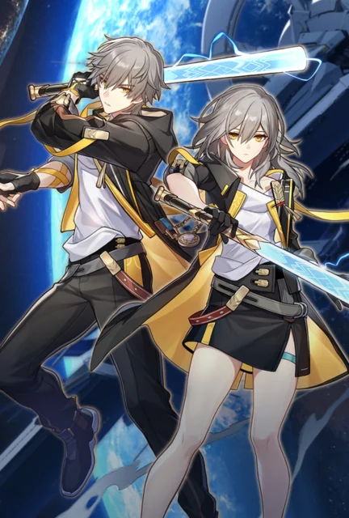
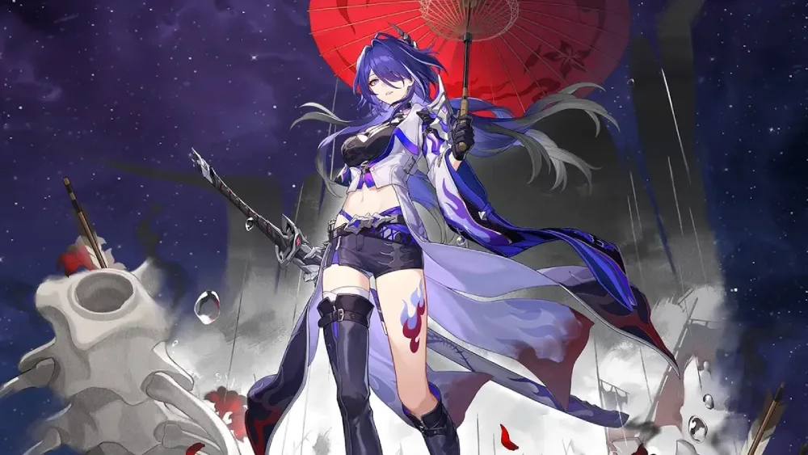

Desbravador(a) / Protagonista

O personagem principal despertado na Estação Espacial Herta com um Stellaron selado em seu próprio corpo. Ao embarcar no Expresso Astral, viaja entre mundos desbloqueando novos Caminhos e elementos.
"Estrelas do Pavilhão do Céu, por favor, guiem nossa jornada."
Conheça alguns dos importantes personagens que o expresso conhece durante a sua jornada, aliados e figuras lendárias que cruzam o caminho do Expresso Astral pelo cosmos.

O personagem principal despertado na Estação Espacial Herta com um Stellaron selado em seu próprio corpo. Ao embarcar no Expresso Astral, viaja entre mundos desbloqueando novos Caminhos e elementos.

Uma garota enérgica encontrada flutuando no espaço presa em um bloco de Gelo Eterno. Como não possui memórias do seu passado, adotou o nome da data em que foi resgatada pela tripulação do Expresso.

O reservado guardião do arquivo do Expresso Astral. Carrega a lança Perfuradora de Nuvens e esconde um passado sombrio ligado à sua verdadeira identidade como o lendário Embebidor Lunae do Luofu de Xianzhou.
.jpg)
A herdeira e atual Guardiã Suprema de Jarilo-VI. Criada na nobreza da Superfície, lutou para reestabelecer a união entre os povos da Superfície e do Submundo após a crise do Stellaron.
.jpg)
Membro nº 83 da prestigiada Sociedade dos Gênios e criadora da Estação Espacial Herta. Prefere interagir através de marionetes mecânicas espalhadas por sua base científica.
.jpg)
O sereno e estrategista General dos Guardiões do Luofu. Conhecido como o "General Adormecido", comanda o exército com sabedoria e controla o invocado Espírito do Trovão.

Uma andarilha misteriosa que se apresenta como uma Ranger Galáctica. Ela carrega uma longa espada katana e caminha sob a sombra do Caminho da Inexistência.
| Personagem | Caminho (Path) | Tipo Elemental | Afiliação |
|---|---|---|---|
| Desbravador(a) | A Destruição / A Preservação / A Harmonia | Físico / Fogo / Imaginário | Expresso Astral |
| 7 de Março | A Preservação / A Caça | Gelo / Imaginário | Expresso Astral |
| Dan Heng | A Caça / A Destruição | Vento / Imaginário | Expresso Astral |
| Bronya Rand | A Harmonia | Vento | Belobog (Jarilo-VI) |
| Herta | A Erudição | Gelo | Sociedade dos Gênios |
| Jing Yuan | A Erudição | Raio | Luofu de Xianzhou |
| Acheron | A Nihilidade | Raios (Raio) | Autodestruidores |
Por carregar um Stellaron no corpo, o Desbravador possui a habilidade única de ressoar com a vontade de diferentes Aeons ao longo de suas viagens, adquirindo novas armas e elementos.
Quem conhece Honkai Impact 3rd vai reconhecer imediatamente a Acheron, pois ela é a variante/paralela de Raiden Mei em Honkai: Star Rail, compartilhando traços visuais, a espada katana e o controle sobre raios.